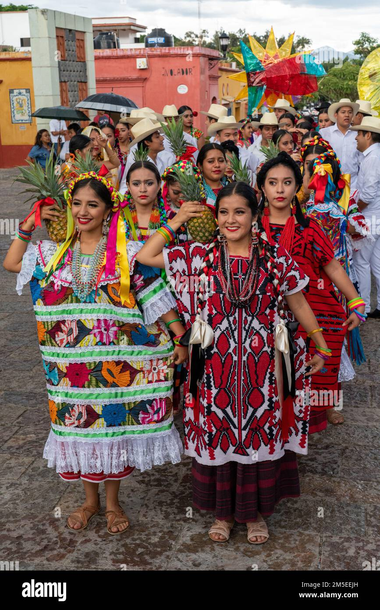

Flor de PiñaLa Flor de Piña es una danza emblemática de San Juan Bautista Tuxtepec, Oaxaca, que celebra la cultura indígena y se presenta en la Guelaguetza, simbolizando la alegría y la herencia de la región. Origen e Historia La danza de la Flor de Piña se originó en 1958, cuando el gobernador de Oaxaca, Alfonso Pérez Gasga, encargó a la maestra Paulina Solís Ocampo la creación de una danza que resaltara las raíces indígenas de la Cuenca del Papaloapan, alejándose de las influencias de la danza jarocha. La música de la danza fue compuesta por Samuel Mondragón, y la primera presentación tuvo lugar el 21 de julio de 1958 durante la Guelaguetza. El Heraldo Significado Cultural La danza representa a los siete municipios de la región del Papaloapan, que comparten la cultura mazateca y chinanteca. A través de sus movimientos, la danza simboliza la fertilidad y la prosperidad, utilizando la piña como un elemento ornamental que las bailarinas llevan sobre el hombro. México Desconocido Vestimenta y Coreografía Las bailarinas visten coloridos huipiles y llevan trenzas adornadas con listones llamativos. La coreografía es elegante y grácil, imitando el crecimiento y la apertura de la piña, lo que refleja la belleza natural de la región. La danza dura aproximadamente 11 minutos y es una de las más esperadas durante las festividades de la Guelaguetza, donde se celebra la diversidad cultural de Oaxaca. |
 |